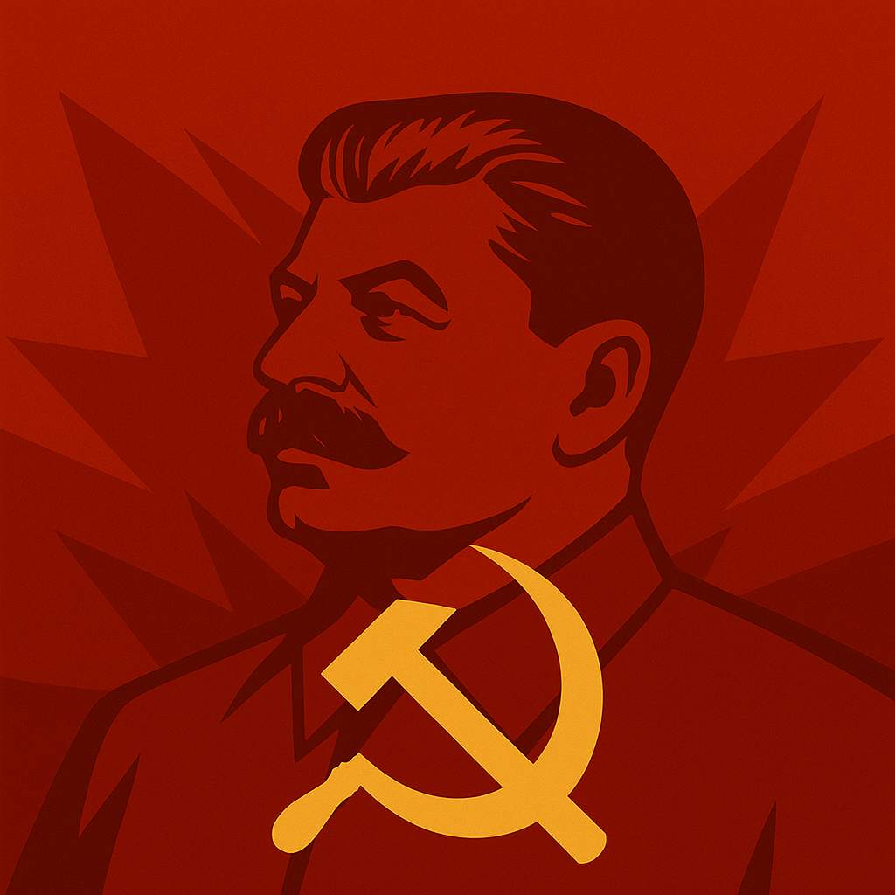
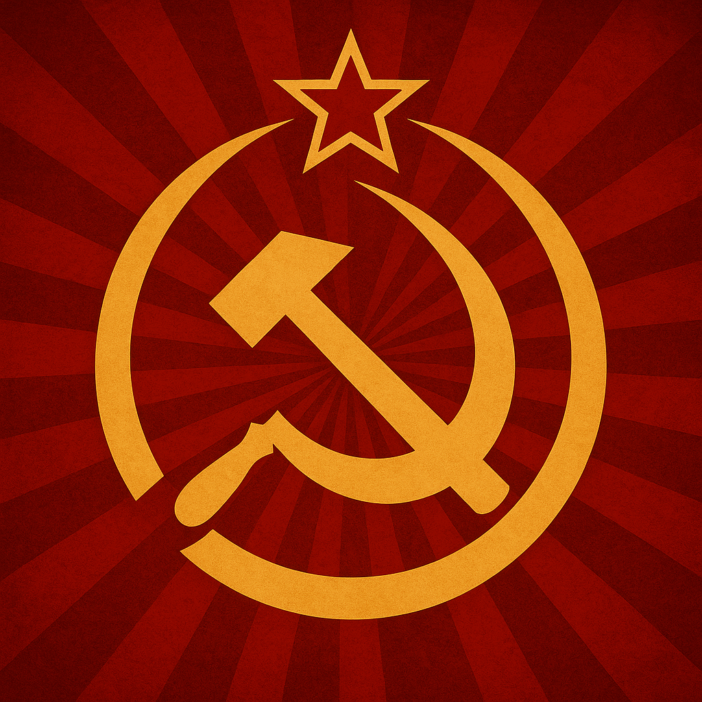
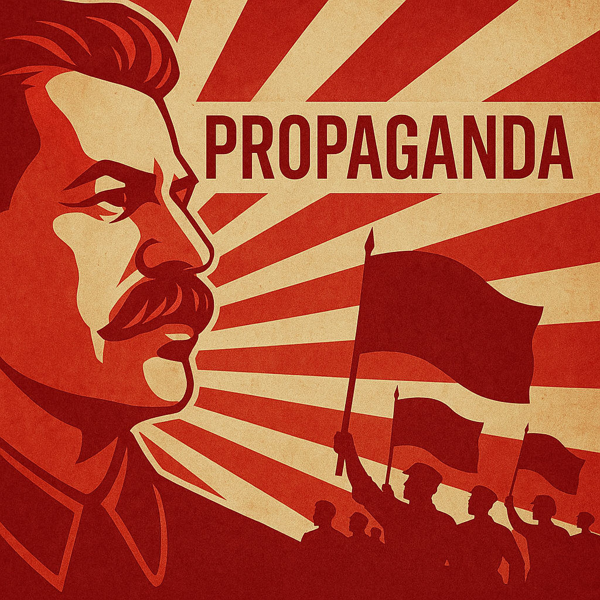
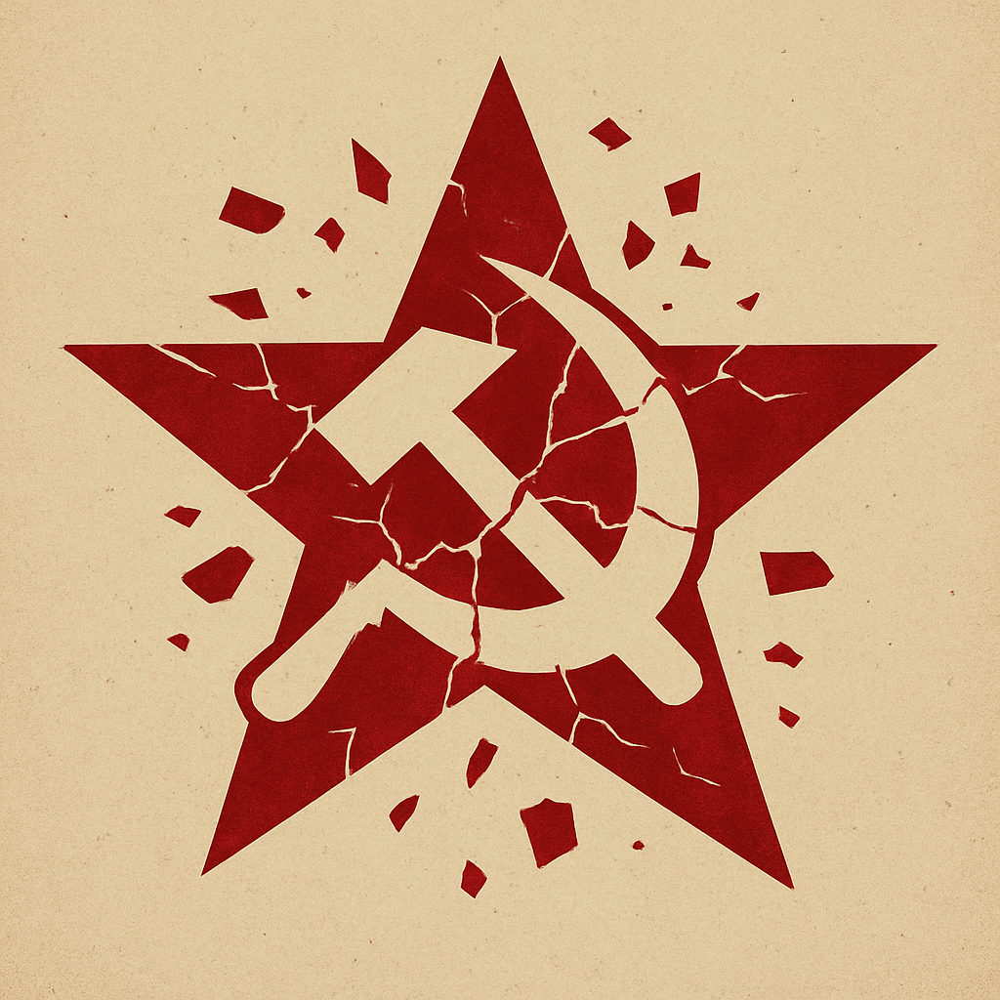

Allgemeines zur Sowjetunion
Die Sowjetunion (UdSSR) war ein kommunistischer Einparteienstaat, der von 1922 bis 1991 existierte. Sie wurde nach der Oktoberrevolution 1917 gegründet und war geprägt durch die Herrschaft der kommunistischen Partei, insbesondere unter Josef Stalin, der mit repressiven Mitteln eine Diktatur etablierte. Die Sowjetunion spielte eine zentrale Rolle im Kalten Krieg und war eine der Supermächte des 20. Jahrhunderts.
Zeitleiste
Herrschaft
Merkmale
Propaganda
Aufarbeitung

Arbeitsblatt
Aufgabenbereiche
Mete Ünlü: Merkmale & Aufarbeitung der Diktatur + Arbeitsblatt
Julian Hermann: Herrschaft + CSS
Alexander Dutter: Timeline
Gabriel Birkent: Propaganda und Feinbilder